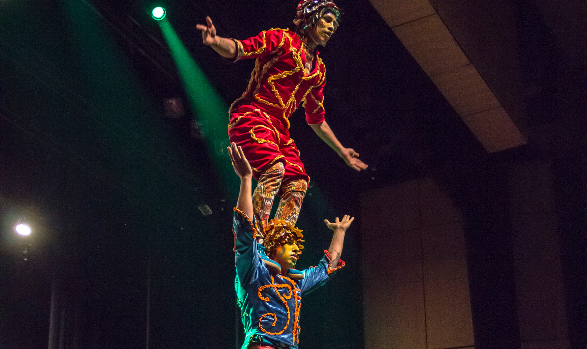
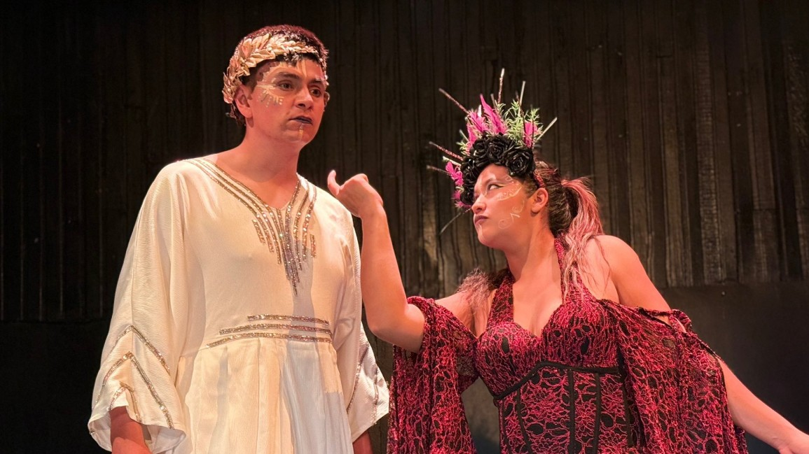
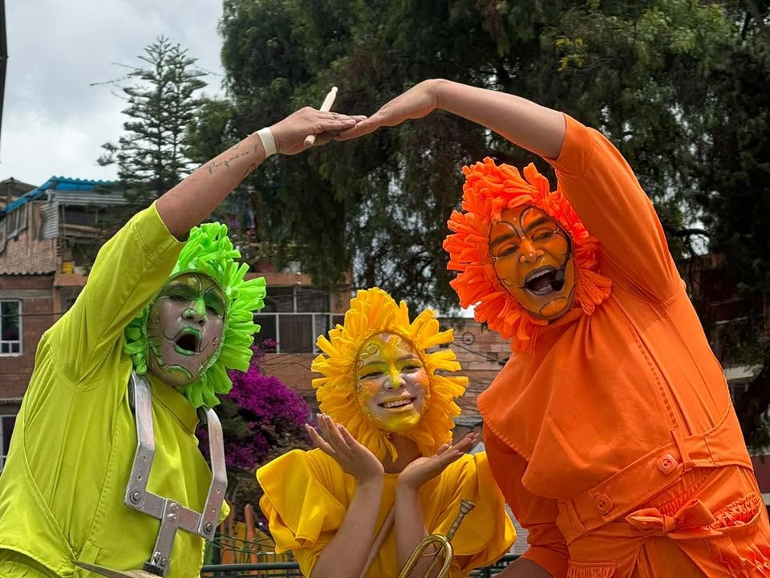
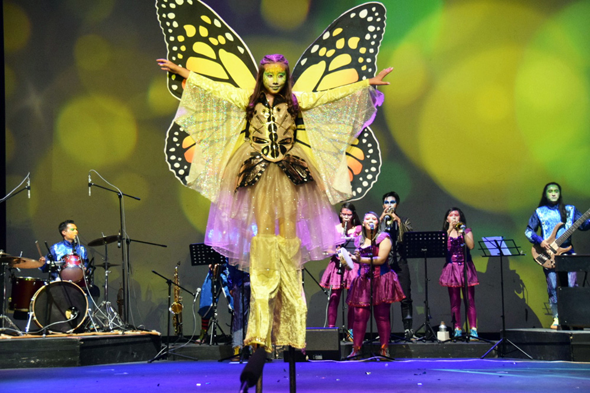

Obras en Repertorio
Cuatro montajes que resumen cuatro décadas de teatro popular, acrobático y festivo, zancos en patines, circo y memoria ancestral llevados a escenarios de todo el mundo.

Sueños Encantados
La obra insignia de la fundación, estrenada en 1990 y con miles de funciones alrededor del mundo. Una niña sueña con encantamientos fantásticos mientras zancos en patines, color y música en vivo llenan el escenario de alegría, paz y vida.
Ver en YouTube
Loa al Divino Narciso
Una puesta en escena inspirada en la obra de Sor Juana Inés de la Cruz, que fusiona teatro, música y elementos de la tradición ancestral para explorar el encuentro entre las culturas indígenas y la espiritualidad. Una obra cargada de simbolismo, fuerza visual y memoria cultural.
Ver en YouTube
Acrocircus
Una comedia satírica que entreteje la historia del circo con crítica social y poesía corporal, combinando clown, danza y acrobacia en un espectáculo tan divertido como reflexivo.
Ver en YouTube
Circo de Melquíades
Inspirada en el realismo mágico de Gabriel García Márquez, esta pieza funde circo, mito y teatro físico para hablar de la resistencia cultural frente a la destrucción del arte.
Ver en YouTube¿Quieres ver el repertorio completo, giras y tras bambalinas?
Suscríbete a nuestro canal